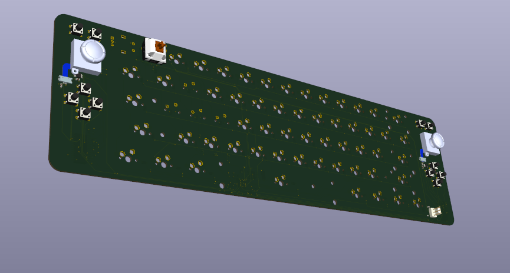

A custom Hall-Effect keyboard and gamepad project utilizing the RP2040 microcontroller's dual-core architecture. One core manages the matrix scanning and Hall-effect sensor ADCs, while the other handles the USB HID protocol. The PCB was laid out in KiCad, focusing on trace length matching for the high-speed data lines.
